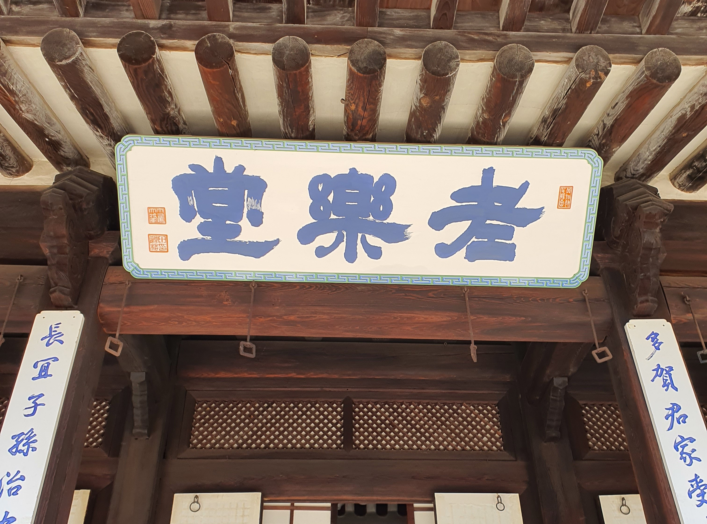
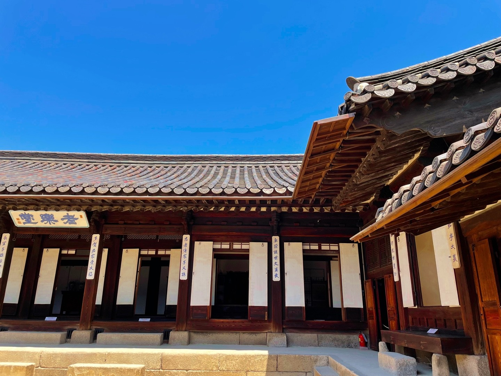

우리가 미처 알지 못 했던, 운현궁의 사실들
운현궁의 유래
흥선군의 사저가 운현궁으로 불리게 된 것은 1863년 12월 9일 흥선군을 흥선대원군으로, 부인 민 씨를 부대부인으로 작호를 주는 교지가 내려진 때부터였다.
고종이 12살까지 살았던 운현궁은 철종 때 옛 관상감 터였던 운현궁에 왕기가 있다는 내용의 민요가 항간에 유행하였으며, 고종이 등극한 후 대원군이 운현궁 터를 다시 확장하였다. 운현(雲峴)이란 당시 서운관(書雲觀)이 있는 그 앞의 고개 이름이었으며, 서운관은 세조 때 관상감(觀象監)으로 개칭되었으나 별호로 그대로 통용되었다. 즉 운현이란 서운관의 약칭이다. 고종이 즉위한 뒤 운현궁으로 부르게 된 것은 왕의 잠저시의 거처를 본궁이라고 하는 선례와 ‘운현’이라는 지명에 유래하여 운현궁으로 불리게 된 것이다.
[출처 : 서울역사박물관 공식 홈페이지]

운현궁의 규모
현재 운현궁 영역에 남아 있는 주요 건물들은 노안당, 노락당, 이로당이 있으며, 지금은 소유가 바뀌어 서울시 민속자료로 지정된 김승헌가 역시 큰아들 이재면 부부가 거처하던 영로당으로 운현궁 일부였다.
운현궁은 고종이 즉위(1863.12.13.)한 지 한 달쯤 지나서 대왕대비의 하교로 운현궁의 신·증축 공사는 시작되었고, 9개월 만에(1864.9.) 노락당과 노안당 건물의 준공을 보았다. 당시 대왕대비는 호조에 명하여 운현궁에 매달 쌀 10섬과 100냥씩을 보내고, 운현궁의 신·증축 비용으로 17,830냥을 지원하였다. 운현궁이 준공되었을 때 고종은 대왕대비와 왕대비를 모시고 운현궁 낙성식에 참여하였다. 이때 고종은 자신이 그곳에서 살던 때를 생각하여 근처의 선비와 소년들에게 임시과거시험을 보게 하고 선비 50명, 소년 497명을 선발해서 시상하는 등 운현궁의 준공을 기념 축하하였다.
본래 흥선군의 사저였을 때 운현궁의 위치는 창덕궁과 경복궁의 중간 부근으로 지금의 운현궁과 덕성여자대학교 평생교육원 자리에 해당한다. 그러나 증축하여 규모가 가장 커졌을 때는 주위 담장 길이가 수리(數理)나 되고 4개(경근문, 공근문, 정문, 후문)의 대문이 웅장하여 마치 궁궐처럼 엄숙하였다고 하는데, 현재의 덕성여자대학교, 舊 TBC 방송국, 일본문화원, 교동초등학교, 삼환기업 일대라고 한다. 운현궁의 대표적 건물로는 고종 원년(1864년) 9월에 준공한 오락 당과 노안당 그리고 고종 6년(1869년)에 증축한 이로당이 있고, 지금은 한 개뿐이지만 그 당시에는 4개(경근문, 공근문, 정문, 후문)의 대문이 있었다.
[출처 : 서울역사박물관 공식 홈페이지]